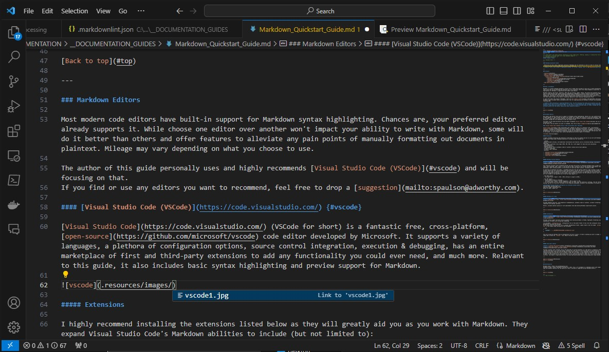

Markdown Quickstart Guide
Below you can find a basic high-level overview of Markdown and its usefulness as well as links to various resources to assist you when writing documentation files using Markdown.
Note: This is by no means a comprehensive guide. For further reading, refer to Web Resources.
For the best experience, download and view the HTML version directly in your browser.
Contents
What is Markdown?
Markdown is a markup language designed to convert text to HTML which provides an easy way to create documentation and other files that can be previewed and exported with rich formatting, while still being readable as plain-text. Syntax highlighting for Markdown is supported by most modern code editors.
Markdown supports code blocks, equations, HTML tags and styling, images, tables, and pretty much anything else you'd need to write effective and visually pleasing documentation. Markdown (or similar) should be preferred over WYSIWYG editors like Microsoft Word when creating application technical documentation files going forward for better readability, consistency, and flexibility. While standard word processors are great for writing reports or essays, they fall short when it comes to the kind of formatting required for most technical documentation files.
To learn more about Markdown, check out the creator's website which includes syntax information and a tool for experimenting with Markdown in-browser and displaying the resulting HTML.
Note: When previewing or exporting Markdown files, how the resulting file looks will be mostly up to the Markdown parser used to do the preview/export. In my case, I'm using VSCode with the Markdown Preview Enhanced extension and exporting to HTML from the preview using the github-light.css theme. Mileage may vary with different parsers but the overall syntax and result should be similar.
Web Resources
Markdown Guide
Link: https://www.markdownguide.org
A very useful website that goes in depth on standard Markdown formatting with basic and advanced examples and hacks to minimize the any learning curves. It's an excellent resource that you can reference as you begin your journey into Markdown.
markdown-it demo
Link: https://markdown-it.github.io/
A demo page created to act as a guide for markdown-it; a powerful Markdown parser with support for some non-standard features. By default gives an outline of Markdown features and their usage with a side-by-side view of the raw plaintext Markdown (left) and the HTML it generates (right.) Also allows you to edit, preview, and debug Markdown in-browser by altering the contents of the left pane.
Daring Fireball
Link: https://daringfireball.net/projects/markdown/
The creator's website. Contains information about Markdown, its purpose, and its usage.
Editing Markdown
Most modern code editors have built-in support for Markdown syntax highlighting. Chances are, your preferred editor already supports it. While choose one editor over another won't impact your ability to write with Markdown, some will do it better than others and offer features to alleviate any pain points of manually formatting out documents in plaintext. Mileage may vary depending on what you choose to use.
The author of this guide personally uses and highly recommends Visual Studio Code (VSCode) and will be focusing on that.
If you find or use any editors you want to recommend, feel free to drop a suggestion.
Visual Studio Code (VSCode)
Visual Studio Code (VSCode for short) is a fantastic free, cross-platform, open-source code editor developed by Microsoft. It supports a variety of languages, a plethora of configuration options, source control integration, execution & debugging, has an entire marketplace of first and third-party extensions to add any functionality you could ever need, and much more. Relevant to this guide, it also includes basic syntax highlighting and preview support for Markdown.
Extensions
I highly recommend installing the extensions listed below to aid you as you work with Markdown.
A few benefits are outlined below:
- Linting.
- Better document previews, with additional functionality and features such as in-preview editing, stylization, and exporting.
- Exporting to different files types (HTML, PDF, PNG, etc.) with support for easy one-click stylization.
- Auto-completion.
- Keyboard shortcuts.
- Task automation, such as automatic table of contents creation and on-save updating.
- In-editor formatting.
- In-editor spell checking.
- And more.
Markdown Preview Enhanced
Author: Yiyi Wang
Link: Markdown Preview Enhanced - Visual Studio Marketplace
This extension provides nicely formatted previews and eases the process of exporting markdown files to other file types. Once installed, CTRL + Shift + V can be used to open a preview of the current document being edited. Once previewing, right clicking anywhere in the preview will give you export options, including as HTML.
If exporting to different file types, I recommend exporting from the preview window by right clicking to open the preview context menu and selecting the export option there to ensure the result is consistent with the preview. How the resulting file looks is entirely up to the parser used to generate the file, so exporting from the preview will help avoid any unexpected formatting or style issues. Any in-preview stylization from the extension (such as color themes) will be included in the exported file if the file type supports it.
For HTML exports:
- Use Right Click > Export > HTML > HTML (offline) to export to HTML.
For PDF exports:
- Ensure Google Chrome is installed.
- Use Right Click > Export > Chrome (Puppeteer) > PDF to export to PDF.
- If you encounter an error stating chrome.exe cannot be found, open the extension's settings, find the "Chrome Path" setting, and set it to the full file path to the chrome.exe executable (include in the executable in the path.)
Recommended Preview Themes for Exporting
Preview Theme > Light > github-light.css
Code Block Theme > Light > default.css
Reveal.js Theme > Light > light.css
Markdown All in One
Author: Yu Zhang
Link: Markdown All in One - Visual Studio Marketplace
Provides keyboard shortcuts, auto-completion recommendations, automatic table of contents, in-editor formatting, simplified list editing, and more.
Overall, provides numerous quality of life improvements that make editing Markdown significantly easier.
markdownlint
Author: David Anson
Link: markdownlint - Visual Studio Marketplace
Provides linting support and best practice guidance while editing markdown in VSCode. Highlights formatting issues with explanations to assist with writing and formatting.
I've included a .markdownlint.json configuration file in the parent folder of this file that configures various markdownlint warnings and settings.
If you would like to include this file in another documentation folder, simply create a new file named .markdownlint.json in the target folder and paste in the following:
{
"extends": "../__DOCUMENTATION_GUIDES/Markdown/.markdownlint.json"
}
This will bring any settings from my configuration file over to yours. If there's anything you want to change, you can simply add it below the "extends" line. Adjust the path as needed.
Code Spell Checker
Author: Street Side Software
Link: Code Spell Checker - Visual Studio Marketplace
Provides in-editor spell checking. One of the downsides to writing documents in a code editor as opposed to something like Microsoft Word is you lose the grammar checking that comes built-in with the majority of word processors. This extension alleviates that pain point by adding in-code spell checking. It will highlight misspelled words and when viewing warnings will give you a list of words in order of most likely to least likely for what it thinks you're trying to spell. It also allows you to add unknown words to your personal dictionary so they aren't incorrectly marked as incorrect. This makes it significantly easier to avoid spelling mistakes while writing especially large documents.
Examples
Below you can find some examples of various elements followed by code blocks showing the Markdown used to generate them.
Headings
Biggest 1
# Biggest 1
Biggest 2
Biggest 2
=========
Bigger 1
## Bigger 1
Bigger 2
Bigger 2
--------
Big
### Big
Small
#### Small
Smaller
##### Smaller
Smallest
###### Smallest
Heading Links
### Heading Links
[Heading link](#Heading-links)
Custom Heading Links
### Custom Heading Links {#custom-link}
[Custom heading link](#custom-link)
Font Modifiers (Bold, Italics, Strikethrough, etc)
Bold
Italics
Strikethrough
Underscore
Highlight
Subscript (H2O)
Superscript (24)
AHHHHHHHHHHHHHHHH
### Font Modifiers (**Bold**, *Italics*, ~~Strikethrough~~, etc)
**Bold**
*Italics*
~~Strikethrough~~
<u>Underscore</u>
==Highlight==
~Subscript~ (H~2~O)
^Superscript^ (2^4^)
^A^H~H~H^H^H~H~H^H^H~H~H^H^H~H~H^H^
Page Dividers
### Page Dividers
---
___
Math
### Math
$\sqrt{\frac{52371}{11}}$
Code Blocks
An inline code block.
A
multiline
code
block
### Code Blocks
`An inline code block.`
```
A
multiline
code
block
```
With Syntax Highlighting
public static string Example<T>(T obj, Markdown markdown) where T : notnull
{
if (obj is Cheese cheese && cheese.Enabled && markdown.Enjoyment == EnjoymentEnum.Fun)
{
var anArray = new int[]{ 1, 2, 3, 4, 5 };
return DoALittleDance(markdown, cheese, true, 1, anArray);
}
}
#### With Syntax Highlighting
```csharp
public static string Example<T>(T obj, Markdown markdown) where T : notnull
{
if (obj is Cheese cheese && cheese.Enabled && markdown.Enjoyment == EnjoymentEnum.Fun)
{
var anArray = new int[]{ 1, 2, 3, 4, 5 };
return DoALittleDance(markdown, cheese, true, 1, anArray);
}
}
```
Nested Code Blocks
#### Nested Code Blocks
``````markdown
#### Nested Code Blocks
`````markdown
#### Nested Code Blocks
````markdown
### Code Blocks
```csharp
public static string Example<T>(T obj, Markdown markdown) where T : notnull
{
if (obj is Cheese cheese && cheese.Enabled && markdown.Enjoyment == EnjoymentEnum.Fun)
{
var anArray = new int[]{ 1, 2, 3, 4, 5 };
return DoALittleDance(markdown, cheese, true, 1, anArray);
}
}
```
````
`````
``````
Lists
- First
- Second
- Third
- First
- Second
- Third
- First
- Second
- Third
- First
- Second
- Third
- First
- Second
- Third
- First
- First
- First
- First
- ...
- First
- First
- First
### Lists
- First
- Second
- Third
+ First
+ Second
+ Third
* First
* Second
* Third
1. First
1. Second
1. Third
> <UsingThisEmptyTagToBreakThePreviousList>
1. First
2. Second
3. Third
- First
- First
- First
- First
- ...
Check List
- Eggs
- Beans
- Tomatoes
### Check List
- [x] Eggs
- [ ] Beans
- [x] Tomatoes
Definitions
- Term 1
- Something
- Term 2
- Something
- Something else
### Definitions
Term 1
: Something
Term 2
: Something
: Something else
Quote Blocks
This is a quote block.
Something else here.Indented more
Even more
EVEN MORE
hoh
### Quote Blocks
> This is a quote block.
> Something else here.
>> Indented more
>>> Even more
>>>> **EVEN MORE**
>>>>> ~hoh~
Tables
| Left Aligned Column | Also Left Aligned | Center Aligned Column | Right Aligned Column |
|---|---|---|---|
| Left | Left | Center | Right |
| More Left | Another Left | Another Center | More Right |
| You | Get | The | Point |
### Tables
| Left Aligned Column | Also Left Aligned | Center Aligned Column | Right Aligned Column |
| ---- | :--- | :--: | ---: |
| Left | Left | Center | Right |
| More Left | Another Left | Another Center | More Right |
| You | Get | The | Point |
HTML
This is some pretty red text.
<span style="color: red">This is some pretty red text.</span>
Links
### Links
[Adworthy](https://adworthy.com)
<https://adworthy.com>
Footnotes
Footnote[1]
### Footnotes
[^1]: This is a footnote.
Footnote[^1]
Images

### Images

This is a footnote. ↩︎